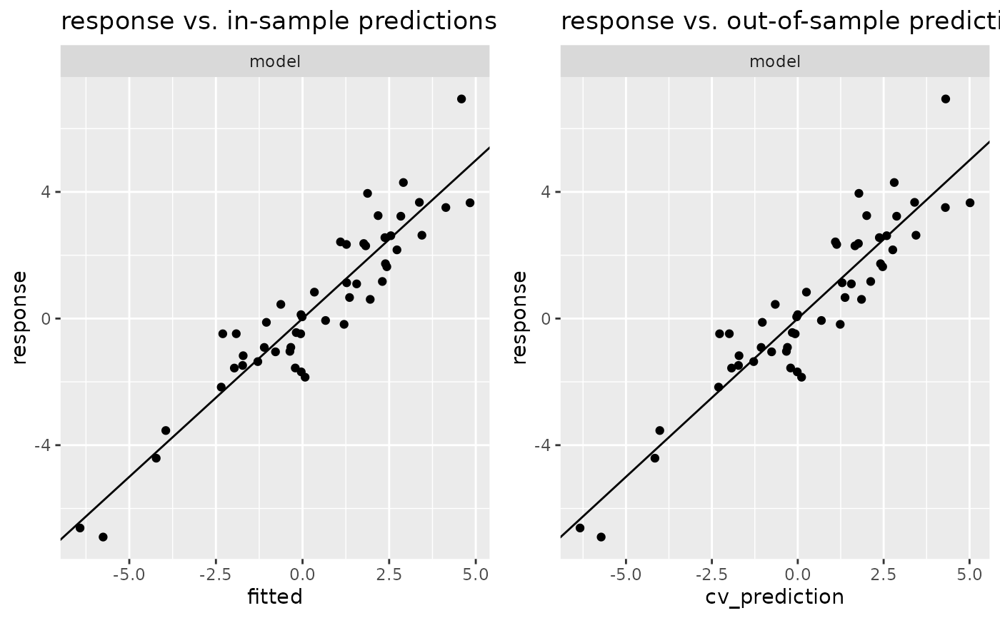
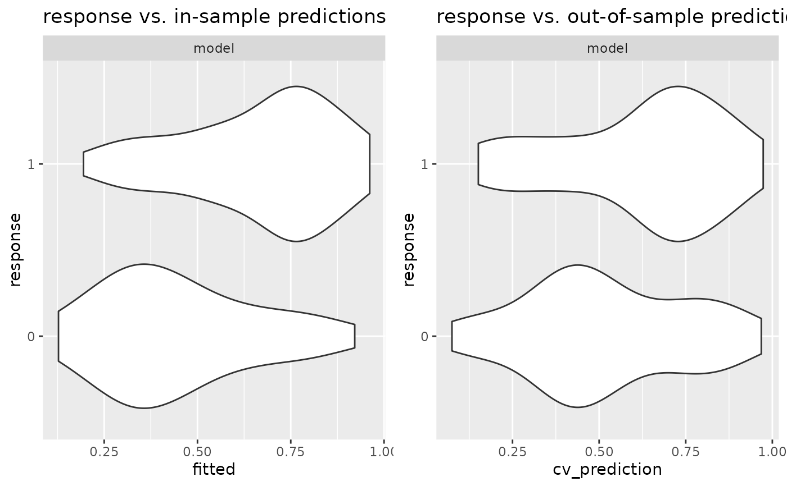

Plot methods for classes “model”, “multimodel” and “cv”
plot.model.Rdplot.model() and plot.multimodel() fit the model(s) in x and draw scatter plot(s) of
actual response values versus fitted values in case of a continuous response.
With binary response, a violin plot of the fitted values versus the response variable is produced
(using geom_violin()).
plot.cv creates a similar plot, using the predictions resulting from cross-validation
(generated with cv_predict) as fitted values.
Arguments
- x
Object of appropriate class.
- plot
Logical: If
TRUE, a ggplot is returned, ifFALSEadata.frame.plot()first prepares adata.frameand then draws some ggplot using this data, with limited options for customization. If you want to design your own plot, you can setplot=FALSE, and use thedata.framereturned byplot()to create your plot.- n_max
Integer: Maximal number of points to draw in a scatter plot. If size of data is larger than
n_max, a random sample will be displayed.- ...
Passed to
geom_point()orgeom_violin()(in case of binary response), respectively.
Examples
# Simulate data
set.seed(1)
n <- 50
x <- rnorm(n)
y <- 3*x + rnorm(n)
mymodel <- model(lm(y~x))
# Plot in-sample and out-of-sample predictions:
if (require(ggplot2) && require(gridExtra)){
plot(gridExtra::arrangeGrob(
plot(mymodel) + ggtitle("response vs. in-sample predictions"),
plot(cv(mymodel)) + ggtitle("response vs. out-of-sample predictions"),
nrow = 1))
}
#> Loading required package: ggplot2
#> Loading required package: gridExtra

# Binary response: binomial response
# Simulate data
n <- 100
p <- 10
x <- matrix(rnorm(p*n), nrow = n)
y <- (0.1 * rowSums(x) + rnorm(n)) > 0
mymodel <- model(glm(y~x, family = binomial))
# Plot in-sample and out-of-sample predictions:
if (require(ggplot2) && require(gridExtra)){
plot(gridExtra::arrangeGrob(
plot(mymodel) + ggtitle("response vs. in-sample predictions"),
plot(cv(mymodel)) + ggtitle("response vs. out-of-sample predictions"),
nrow = 1))
}
